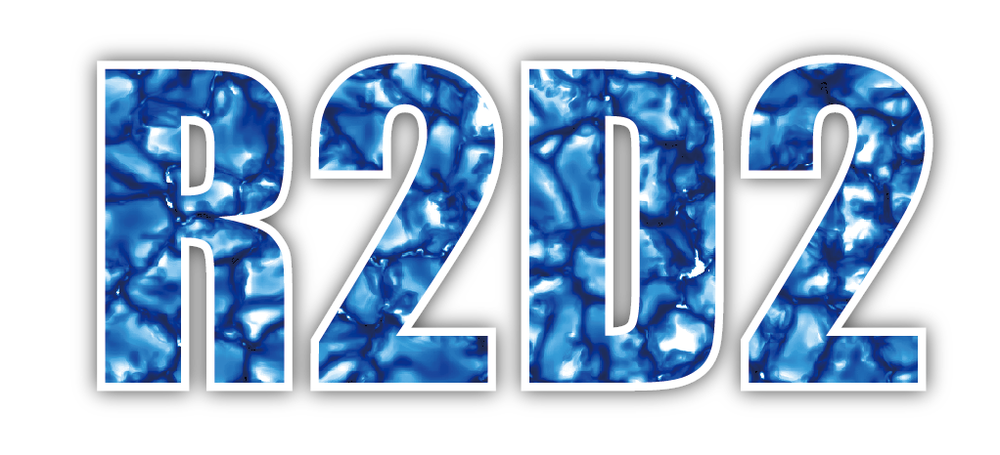

Sphinx使用の覚書¶
はじめに¶
Sphinxは、reStructuredTextからHTMLやLatexなどの 文章を生成するソフトウェアである。 Sphinxの公式サイト 最近ではMarkdownでも記述できるが、結局最後のところはreStructuredTextで記述することになるので、現状では、Markdownは使用していない。このウェブサイトもSphinxで生成しているので、覚書をここに記す。
インストール¶
ここではAnacondaがすでにインストールしてあるMac にSphinxをインストールすることを考える。 基本的には以下のコマンドを実行するのみである。
pip install sphinx
Markdownを使いたい時は以下のようにする。
pip install commonmark recommonmark
HTMLファイルの生成¶
適当なディレクトリを作成(ここでは test )とする。
そこで、 sphinx-quickstart コマンドによりSphinxで作るドキュメントの
初期設定を行う。
mkdir test # ディレクトリ作成
cd test # ディレクトリに移動
sphinx-quickstart
いくつか質問をされる。基本的には読めばわかる質問であるが 少し戸惑う質問を以下にあげる。
プロジェクトのリリース: 1.0などとversionを答える。後に
conf.pyを編集すれば変更可能プロジェクトの言語: デフォルトは英語の
enであるが、日本語を使いたい時はjaとする
VS codeの利用¶
VS codeを利用すると快適にreStructuredTextを作成することができる。
*.rst ファイルをVS codeで開くと自動で確認されるが、以下のプラグインをインストールする。
{kind=link}
Cmd+k Cmd+r で画面を分割してプレビューできる。正しい conf.py の場所を設定する必要がある。
環境設定¶
デフォルトの設定では、数式を書く時にMathjaxを使用するようで、数式の太字が意図するように表示されなかったのでsvgで出力することにした。
以下のように conf.py に追記する。
extensions += ['sphinx.ext.imgmath']
imgmath_image_format = 'svg'
imgmath_font_size = 14
pngmath_latex='platex'
また、ウェブサイトのテーマを変更することもできる。どのようなテーマがあるかは
Sphinxのテーマ
を参照。好きなテーマを選んで conf.py に以下のように設定。
html_theme = 'bizstyle'
html_theme_options = {'maincolor' : "#696969"}
今後変更の余地あり。
記法¶
リンク¶
外部ウェブサイト
`Twitter <https://twitter.com>`_
などとすると
とリンクが生成される
内部サイト
自分で作成しているドキュメントをリンクするには
:doc:`index`
などとすると
とリンクが生成される。
コード¶
Sphinxでは、コードを直接記載することができる。また、言語に合わせてハイライトも可能。 コードの表記に選択できる言語は Pygments にまとめてある。
.. code:: fortran
implicit none
real(KIND=0.d0) :: a,b,c
a = 1.d0
b = 2.d0
c = a + b
このようにすると、以下のように表示される
implicit none
real(KIND=0.d0) :: a,b,c
a = 1.d0
b = 2.d0
c = a + b
画像¶
画像の挿入には image ディレクティブを使う。オプションで、画像サイズなどを調整できる。堀田はだいたいwidthで調整している。
.. image:: source/figs/R2D2_logo.png
:width: 350 px
とすると下記のように画像が挿入される。
{kind=link}
数式¶
SphinxではLatexを用いて数式を記述することができる。 1行の独立した数式を取り扱うときは
.. math::
\frac{\partial \rho}{\partial t} = -\nabla\cdot \left(\rho {\boldsymbol v}\right)
とすると以下のように表示される。
インラインの数式では
ここで :math:`\rho_1=x^2` とする
とすると
ここで とする
と表示される。
最終更新日：2020年03月23日